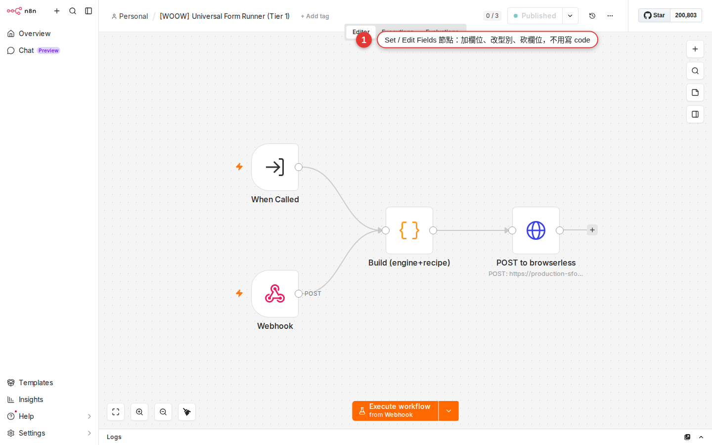

Set / Edit Fields: shape data without writing code
The previous node hands you a big blob of JSON, but the next node only needs a few of its fields — or wants them combined, renamed, or given a default. Changing the shape like that takes no code at all. The Set node (called Edit Fields in the newer interface) is the visual tool built for exactly this job. Learn it properly and your workflows will need far less Code.
Why you need a data-shaping step
Chapter 9 taught you that items are the basic unit that flows through n8n, and that every item is a blob of JSON. Wiring up SaaS nodes in Chapter 11, you have almost certainly hit this:
- The HTTP Request node hands back:
{ firstName: "Xiaoming", lastName: "Wang", email: "a@b.com", age: 28, avatar_url: "...", ... } - But the next node, Google Sheets, only needs three fields:
{ Name: "Wang Xiaoming", Email: "a@b.com", Age: 28 }
You do not want to hand-assemble ten lines of expression inside the Sheets node, and you do not want to open a Code node and write JavaScript every time either. What you want is a waypoint that cleans the upstream JSON up into the shape the downstream node wants — and that is the Set node. It calls no API, triggers nothing, does nothing to the outside world; it purely gives the JSON a new shape and passes it on.
What the Set node actually does
Think of the Set node as a small processing machine. It works in three steps:
-
Read the input items
It receives every item the previous node produced (one blob of JSON, or many). As with any other node, n8n runs it once for each item automatically.
-
Reassemble the JSON from your settings
In the Set node you say which fields to keep, which to add and which to change, and it builds a new JSON from your rules.
-
Emit the output items
The reshaped items go to the next node. The original input is untouched — the Set node produces a new version, it does not edit the input in place.
That is all it does. No API call, no webhook, no side effect. It is one of the fastest and safest nodes in n8n, and it usually runs in milliseconds.
Two working modes: Manual Mapping vs JSON
Open the Set node and there is a Mode dropdown at the top with just two options:
| Mode | How to set it | When to use it |
|---|---|---|
| Manual Mapping (the default) | Add one field at a time with Add Field: Name (what the new field is called) + Type (String / Number / Boolean / Array / Object) + Value (an expression or a fixed value) | 90% of cases. Adding a few fields, renaming a few, filling in a few defaults — the manual interface is the clearest to read |
| JSON | Paste a whole JSON template and fill values in dynamically with {{ }} expressions inside it |
You have to restructure the JSON (turning flat data into nested data, say), or you already have a JSON template to copy |
Both modes do the same thing underneath — produce a new piece of JSON. The only difference is whether you set it up in a visual interface or paste the JSON text yourself. If you are new, always start with Manual Mapping and only switch to JSON when you need a nested structure.
Hands-on: combine firstName and lastName into full_name
This is the most typical thing a Set node is used for. Say the upstream node produces:
{
"firstName": "Xiaoming",
"lastName": "Wang",
"email": "xiaoming@example.com",
"age": 28
}You want one more field after that called full_name, with the value Wang Xiaoming, because this example’s required output puts lastName before firstName. Note: choose an order and separator that match your users’ naming conventions. Follow along:
-
Add an Edit Fields node
On the canvas press + to add a node, search for
edit fieldsorset, and pick Edit Fields (Set). Wire it after the node that produces the JSON above. -
Leave Mode on Manual Mapping
Manual Mapping is the default, so there is nothing to change.
-
Click Add Field under Fields to Set
A blank field card appears below. Set Type to String, because full_name is a string.
-
Put
full_namein NameThis is the new field's name, and it is the name that appears in the JSON downstream nodes see.
-
Put the expression
{{ $json.lastName }}{{ $json.firstName }}in ValueThere is an Expression toggle at the top right of the Value field; switch to Expression mode and paste that in. For expression syntax see Chapter 14 —
$jsonmeans the JSON of the item being processed right now. -
Tick Include Other Input Fields
There is an important toggle further down the node: Include Other Input Fields (the wording the v1 UI actually uses; the official docs page still says the old Keep Only Set Fields, whose logic is the other way round). Ticked = keep every original field and add the full_name you set. Unticked = keep only the fields you set and throw the rest away. Tick it here.
-
Run Execute Node and look at the result
Press Execute Node at the top right of the node. The Output panel should produce:
{ firstName: "Xiaoming", lastName: "Wang", email: "...", age: 28, full_name: "Wang Xiaoming" }— every original field is still there, plus a full_name. Job done.
{{ $json.xxx }} for you.The five most common Set uses, at a glance
Learn these five and you have covered nine tenths of everyday Set node work.
| What you want to do | How to set it | Example value |
|---|---|---|
| Add a new field (a timestamp, a status flag) | Add Field, put the new field name in Name, produce the value with an expression | {{ $now }} for the current time; Processed as a plain string |
| Rename a field | Add Field with the new name, pull the old value with {{ $json.oldField }}; then turn Include Other Input Fields off, or list every field you want to keep |
Name = customer_email, Value = {{ $json.email }} |
| Fill in a default (when the field is missing) | Use a ternary operator in Value to test whether there is a value | {{ $json.phone || 'not provided' }} |
| Convert a type (string to number and the like) | Wrap it in a built-in JavaScript function | {{ Number($json.amount) }}, {{ String($json.id) }}, {{ Boolean($json.is_vip) }} |
| Fill a value conditionally (what goes in depends on the upstream value) | Use a ternary operator (condition ? A : B) |
{{ $json.amount > 1000 ? 'VIP' : 'Standard' }} |
All five are within reach of Manual Mapping mode — no Code node, no functions to write. Most of the built-in JavaScript functions available in an expression (Number, String, Boolean, Math.round, Date, and string methods such as .toUpperCase(), .trim() and .split()) can be written directly.
{{ $json.xxx }} for you. It is the least-effort route when you are new.Include Other Input Fields: the toggle beginners trip over
This toggle is the easiest part of the Set node to get confused about, so it is worth a section of its own.
| Toggle state | Behavior | What ends up in the output |
|---|---|---|
| Include Other Input Fields ticked | Keeps every field the input had; the fields you set overwrite (same name) or are added (new name) | The original 5 fields + the 2 you added = 7 fields |
| Include Other Input Fields off | Keeps only the fields you listed under Fields to Set and throws the rest away | You set 2 fields = only 2 fields |
Which one when?
- Adding or changing fields while keeping the rest → tick it. This is the common case.
- A big clean-out — you only want three fields to go downstream → turn it off, then list those three fields under Fields to Set.
- Security — the upstream API response holds sensitive fields (token, password_hash) you do not want carried downstream → turn it off and let through only the safe ones.
email under Fields to Set, your downstream nodes will never get an email — this is the "my field disappeared" bug beginners hit most. When a field is missing from the output panel, check this toggle first. One more common misreading: the toggle only keeps the fields of the current input item; to reference the payload of a node several steps earlier, you still need {{ $('Node Name').item.json.xxx }} (see the last FAQ entry).In the old interface this toggle was called Keep Only Set Fields, and the logic was exactly reversed: ticked = keep only what you set. From v1 it is Include Other Input Fields (ticked = keep the others), which reads far more naturally. Note that the official n8n docs page still says Keep Only Set Fields to this day, so the docs not matching the wording you see in the UI is entirely normal; go by the UI.
JSON mode: the tool for restructuring
When the job is not just adding a few fields but redesigning the whole JSON structure — gathering flat fields into a nested object, for instance — Manual Mapping starts to feel clumsy. That is where JSON mode comes in.
The situation: the upstream node emits flat JSON, you have to send it to an API, and that API wants a nested payload. Say upstream gives you:
{
"id": "ORD-1234",
"firstName": "Xiaoming",
"lastName": "Wang",
"amount": 1500
}But the format the downstream API wants is:
{
"orderId": "ORD-1234",
"customer": {
"name": "Wang Xiaoming",
"vip": true
}
}Handling nesting in Manual Mapping is awkward; in JSON mode one paste settles it:
-
Switch Mode to JSON
In the Mode dropdown at the top of the node pick JSON. Fields to Set disappears and a large text box takes its place.
-
Paste the JSON template
Paste this whole block into the text box:
{ "orderId": "{{ $json.id }}", "customer": { "name": "{{ $json.lastName }}{{ $json.firstName }}", "vip": {{ $json.amount > 1000 }} } }String values have to be wrapped in quotes (
"{{ ... }}"), boolean and numeric ones do not ({{ $json.amount > 1000 }}is straighttrueorfalse). -
Use Include Other Input Fields to decide whether to keep the original fields
JSON mode has the same toggle. Most of the time you paste JSON precisely because you are restructuring, so you turn it off — keeping only the fields the JSON template defines.
-
Run Execute Node and check that the structure is right
The Output panel shows the JSON structure you pasted, with every expression already filled in with real values. Now you can wire up the downstream HTTP Request node and call the API.
Worked example: turn a nested API response into one sheet row
Put the Set node skills from the previous sections together into a short workflow you would really use. The situation: you called an order API with HTTP Request, the JSON that comes back is nested, and you have to append it to an order-tracking sheet in Google Sheets (one row, 4 columns).
What the upstream HTTP Request node returns:
{
"data": {
"user": {
"name": "Wang Xiaoming",
"email": "xiaoming@example.com"
},
"order": {
"id": "ORD-9527",
"amount": 2800
},
"meta": {
"ts": "2026-08-16T10:30:00Z"
}
}
}The sheet's header: Order ID | Name | Email | Amount | Timestamp | VIP
Put a Set node in the middle to do the reshaping:
-
Pick Manual Mapping as the Set node's Mode
You are mapping onto the sheet's fixed columns, so setting one field at a time is the clearest way.
-
Turn Include Other Input Fields off
Carrying the original nested structure into Sheets is pointless, so turn the toggle off and keep only the six fields set below.
-
Click Add Field six times and fill them in, in order
Match them column by column against the sheet's header:
Name Type Value (expression) Order IDString {{ $json.data.order.id }}NameString {{ $json.data.user.name }}EmailString {{ $json.data.user.email }}AmountNumber {{ $json.data.order.amount }}TimestampString {{ $json.data.meta.ts }}VIPString {{ $json.data.order.amount > 1000 ? 'VIP' : 'Standard' }} -
Run Execute Node and check the flat structure
The Output should be 6 purely flat fields:
{ "Order ID": "ORD-9527", "Name": "Wang Xiaoming", "Email": "...", "Amount": 2800, "Timestamp": "...", "VIP": "VIP" }. -
Wire up a Google Sheets Append node
Set the Sheets node's Data Mode to Map Each Column Below. Because the field names already line up exactly with the sheet's header, you can drag the fields from the left panel straight into the matching boxes on the Sheets node — no need to type the expressions again.
That is the Set node's typical working pattern: comb the messy JSON the upstream node threw at you into something the downstream node can digest. Sheets, Slack, Notion and Airtable are all fussy about field formats; put a Set in the middle to tidy the data and the downstream node becomes much easier to configure.

Set vs Function vs Code: which one to use when
Three nodes in n8n can reshape data, but they are for different jobs. You may have run into the Function node in older tutorials, so here it is, sorted out once:
| Node | Any code | What it can do | When to use it |
|---|---|---|---|
| Set (Edit Fields) | No | Add / change / drop fields, simple expressions, type conversion | 90% of data shaping. Reach for this first — if you can avoid writing code, avoid it |
| Function (merged into Code in v0.198.0) | You write JavaScript | Can loop, can call a few helpers; more flexible than Set but still limited | Do not use it any more. The Code node replaced it from v0.198.0 (mid-2022); it is gone from the nodes panel and you only see it when you import an old workflow |
| Code (the current one) | You write JavaScript or Python | Full program logic — loops, if / else, calling an npm module, complex calculations | Logic too complex for Set. The details are in Chapter 20 |
How do you choose? Ask yourself first: "Can Set do this?" If it can, use Set; only move up to Code when it cannot. The Set node is visual, easy to read, hard to get wrong and quick to run; the Code node can do more, but you have to write code, handle the errors, and a non-engineer who inherits it will have a harder time.
A few advanced Set node tricks
1. Add nested fields with dot notation (Manual Mapping mode)
Manual Mapping mode can produce a nested structure too; the trick is to build a path in the Name field with dots:
- Name =
customer.name, Value ={{ $json.firstName }} - Name =
customer.email, Value ={{ $json.email }}
The output is { customer: { name: "Xiaoming", email: "..." } }. That saves you switching to JSON mode.
2. Covering many items in one pass
Like every other node, the Set node runs once for each item automatically. So you do not write a loop — send 10 items in from upstream and Set produces 10 reshaped outputs. On each pass $json points at the item being processed right then.
3. Use Continue On Fail so a broken item does not block the whole workflow
The Settings gear at the top right of the Set node holds Continue On Fail. When an expression fails on one item (a field that does not exist producing undefined.foo, say) and this is off, the whole workflow stops in red. With it on, that item is marked as an error but the workflow keeps running: you can see in the output which items broke while the rest carry on downstream.
4. A Set node at the start of a workflow makes a fake-data generator
No real trigger yet, but you want to test the logic of the nodes after it? Drop in a Manual Trigger plus a Set node, set the Set node's Mode to JSON, paste a block of fake JSON and turn Include Other Input Fields off — now pressing Execute Workflow sends one fake item down the workflow. A lifesaver for debugging.
delete item.json.fieldName.
Common pitfalls and fixes
| Symptom | Cause | How to fix it |
|---|---|---|
| Fields vanish after Set (email was there, the downstream node cannot get it) | Include Other Input Fields is not ticked (or the old Keep Only Set Fields is on), and you did not list email under Fields to Set either | Turn the Include Other Input Fields toggle on, or Add Field every field you want to keep, by hand |
An expression returns undefined |
The field path is wrong — upstream is really $json.name and you wrote $json.data.user.name |
Run Execute Node on the upstream node first, look at what the JSON in the output panel actually is and copy the path from it; or click the field name in the input panel on the left and let n8n fill it in |
| You added a field but the downstream node does not get it | The downstream node's expression still refers to the old field name (you renamed email to customer_email, but downstream still calls $json.email) |
After renaming a field, remember to update the expressions in every downstream node to match. A rename has knock-on effects |
| The field name has a space or Chinese in it and the expression cannot find it | JavaScript dot notation ($json.field name) does not support spaces |
Use the bracket form: {{ $json['field name'] }}, {{ $json['full name'] }}. Brackets take any character |
You clearly typed a number in Value, but the output is the string "123" |
The Type under Fields to Set is String, or the value is wrapped in quotes in JSON mode | Manual Mapping: change Type to Number. JSON mode: leave the quotes off, "amount": {{ $json.amount }}. Or add a type conversion, {{ Number($json.amount) }} |
| All the fields disappear after switching modes | Manual Mapping and JSON mode do not share settings. Switching modes clears them | Ctrl+Z to undo back to the original mode; or decide on the mode before you start setting fields |
JSON mode shows Invalid JSON in red |
A string field is missing its quotes, or there is one comma too many or too few | Paste the JSON into a JSON validator (jsonlint.com) to check it; a {{ }} expression also has to sit in a legal JSON position, and string ones need quotes, "{{ ... }}" |
| The interface gets sluggish once Manual Mapping has a pile of fields | Rendering slows down when the Set node has too many fields (more than 50) | Switch to JSON mode: 50 fields is a small clump of text in the JSON box, and far smoother than 50 visual cards |
FAQ
Does the Set node affect execution time?
How many fields can one Set node set? Is there a limit?
How do the Set node and the Code node differ, and when should I move up?
Why did the newer interface rename Set to Edit Fields?
Can the Set node reshape an "array" field? Turning tags: ["a","b","c"] into tags: "a, b, c", for instance?
tags, Type = String, Value = {{ $json.tags.join(', ') }}. The other way round, to split a string into an array: {{ $json.csv.split(',') }}, with Type set to Array. Set can do any array work inside a single item; but flattening or merging the whole items array (one item becoming three, or three becoming one) needs the Split In Batches / Merge nodes from Chapter 16, or writing Code yourself.What timezone is $now in inside a Set node? Will it drift once it is written to Sheets?
$now is an n8n Luxon DateTime object and defaults to the n8n instance's timezone. Note: verify that timezone in workflow settings rather than assuming a particular region. Written straight into Sheets, Sheets sometimes decides to be clever and shift the timezone. The recommended approach: produce a string directly with {{ $now.toFormat('yyyy-MM-dd HH:mm:ss') }} in Value, set Type to String, and format that column in Sheets as plain text first — then the timezone and the format are both under your control, which is the most reliable.With Include Other Input Fields ticked, what happens if a field I set collides with an existing field name?
email: "a@b.com" and you add a Field in the Set node with Name = email and Value = "hidden" — the output's email is then "hidden". This is a handy way to change a value in place, for example masking a sensitive field or normalizing a column's value ({{ $json.email.toLowerCase() }}). On a collision the value you set always wins; there is no error and no warning, it simply overwrites.Can a Set node reference data from another node instead of the previous one?
{{ $('Node Name').item.json.field }} in the Value field to pull data from any earlier node, not just the previous one. Say a workflow opens with a Webhook node named Webhook, three nodes run after it, and the last Set node wants both the webhook's original payload and the result computed one step earlier — Value can be {{ $('Webhook').item.json.customer_id }} - {{ $json.result }}. This comes up a lot in complex workflows, and it is far cleaner than using Set at every step to keep fields around. Chapter 14 on expressions has full examples, and the sub-workflows in Chapter 19 use a similar technique.